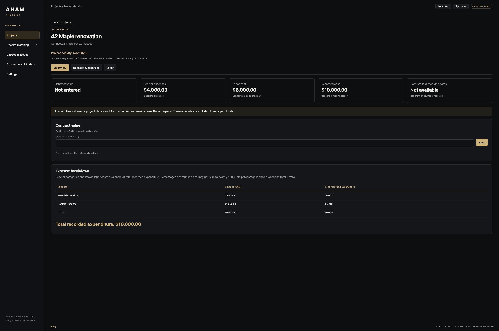
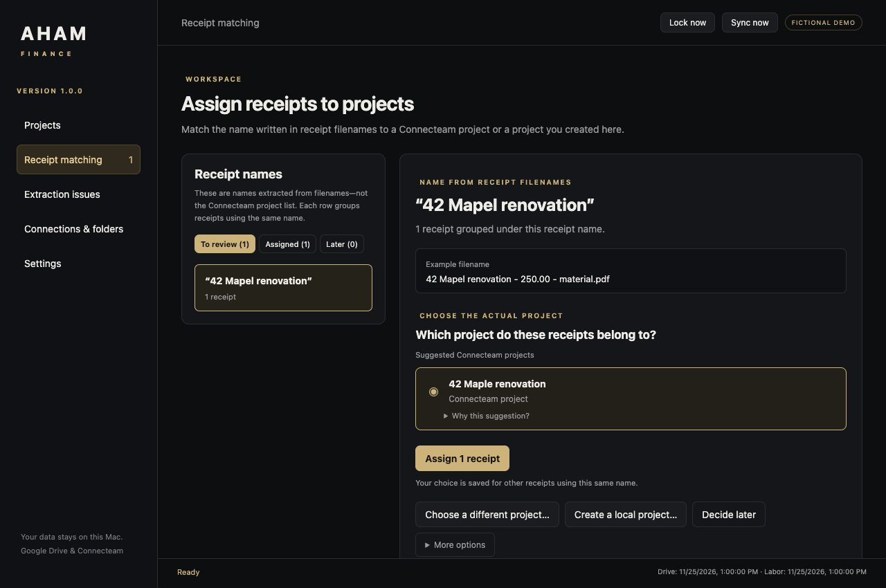

Scattered records
Receipts sit in Drive and labor sits in Connecteam. Building a project summary means gathering information from both.
For construction businesses
Bring your Google Drive receipts and Connecteam labor into one project view on your Mac. Keep the folders and time-tracking tools you already use.
A desktop application by Ragith Software Consulting.
For Apple Silicon Macs, including M5. Requires macOS 15 or later.
Receipts and labor, organized together
One local workspace. Your original source records stay unchanged.
The problem
Receipts sit in Drive and labor sits in Connecteam. Building a project summary means gathering information from both.
A project name entered in a hurry on a receipt may differ from the name in Connecteam. Matching them manually invites mistakes.
New receipts and hours change the picture. A one-off spreadsheet needs another manual update to stay useful.
How it works
Connect your existing accounts, choose your receipt folders, and import. Aham Finance combines the records locally and asks for your decision when a match is uncertain.
Receipt filenames
Projects, hours and calculated pay
Matches records and saves your choices
Receipt expenses, labor and their breakdown
Read-only connections. No hosted application server and no application hosting fees.
Clear, unique names assign automatically. For uncertain names, review a suggested project or choose another. Saved choices guide later imports.
See known recorded expenditure, category amounts and percentages. Add an optional CAD contract value and open the supporting receipts or labor detail.
Review ambiguous matches, receipt names with missing prices, and labor records with missing pay information. The app explains what needs your choice or correction.
Create a local project if Connecteam has no suitable entry. Keep general business expenses separate from costs assigned to a particular project.
Totals depend on imported and assigned records. Missing or unresolved costs can make the picture incomplete. Contract value less recorded expenditure is not final profit.
Inside the app
The actual app interface below uses fictional demonstration data. It does not show a customer's projects, receipts or workers.


Daily use
Before you connect
Project - Amount - Reason.pdfMaple - 342.50 - material.pdf.2026 / 11 - November. The folder structure supplies the receipt activity period, rather than its upload date.The current integrations are Google Drive and Connecteam. Additional sources and financial fields are future possibilities, guided by customer feedback.
Your connections
Aham Finance reads folder and receipt-file metadata to discover receipts and extract project names, amounts, and reasons from filenames.
Google’s read-only permission covers your Drive files. Within the app, you choose which folders are scanned for receipt imports. The app does not download receipt contents during import or change your Drive files.
The app reads projects, worker names, recorded hours, and available calculated pay to associate labor with projects.
It does not change Connecteam projects, shifts, or pay rates. Matching decisions, categories, and contract values are saved locally on your Mac. For days involving several projects, the app discloses estimated labor allocations based on recorded project duration.
Your workspace stays on your Mac. The desktop app connects directly to Google and Connecteam. It does not automatically upload your imported workspace to the developer or an AI service. Internet access is required to connect and refresh your sources.
Read the privacy policy for permissions, storage, retention, and removal details.
Mac desktop preview
For Apple Silicon Macs (M1 and newer, including M5), running macOS 15 or later. Intel Macs and Windows are not supported by this download.
Version 1.0.0 · Build 202611250756 · 35.5 MiB ZIP · Published November 25, 2026
Preview build. Developer ID signing and Apple notarization are not yet complete. macOS may block or ask for approval when opening this build. Contact the developer if you need help installing it.
These steps apply only to this unnotarized preview downloaded from this website. Approve it only if you trust this download. The warning means Apple has not verified the app; it is not an assurance that the app is safe.
If Open Anyway is missing, try opening the app again and return to Privacy & Security; Apple makes the approval option available for about an hour after the blocked attempt. See Apple’s instructions for opening downloaded apps. Keep Gatekeeper and other Mac security protections enabled. A signed and notarized release is planned to remove the need for this manual exception.
Includes project receipt and labor breakdowns, automatic sync while unlocked, a 15-minute inactivity lock, and local diagnostic logs. Your workspace data is not included in the download.
SHA-256 checksum:
2cff927ae13632be192258af0248792f35c782c64d32d108133a80ac27b22f82Connect your accounts and compare one project with your source records. Share what is useful and what needs improving.